Decision Trees
Maybe you are, and maybe you aren't. The White Wizard will know. - Treebeard a poorly trained decision tree can't classify Merry and Pippin as hobbitsThe number of distinct truth table for n variables are 2^(2^n) the first 2 is for the output value, 2^n are the number of rows.
An hypothesis for conjunctive functions can be represented with a vector of n features. The vector is filled with 0, 1, ? (don't care), and null. Since all hypothesis with at least a null are equivalent the |H| = 3^n + 1
Given two hypotheses h1 and h2, h1 is more general than or equal to h2 (h1 >= h2) iff every instance that satisfies h2 also satisfies h1.
Given two hypotheses h1 and h2, h1 is (strictly) more general than h2 (h1>h2) iff h1 >= h2 and it is not the case that h2 >= h1.
To decide how to split the data when building a tree we use entropy. Given a dataset D with c categories entropy is defined as:
 Where p_i is the percentage of the data belonging to that class.
Where p_i is the percentage of the data belonging to that class.
We pick the feature that gives use the highest information gain, which is defined as

Each branch of the tree defines a rule. Each rule has a support |D_v| / |D| and a confidence |D_v+| / |D_v|
Building a tree is expensive and may lead to overfitting of the data, i.e. when the hypothesis we've found works worst on independent test data. So we must prune the tree.
We can either pre-prune, that is, we stop growing the tree when we have no sufficient data left or post-prune, when we grow the full tree then remove sub-trees with insufficient evidence.
We label the newly created leaf with a majority function evaluated on the subtree.
Performance Evaluation
I can see the confusion matrix - NeoA confusion matrix ( or contigency table ) is a table of four elements:
- TP: “true positive”, i.e., number (or %) of positive instances classified as positive by the system
- FP: “false positive”, should be negative, the system classified as positive
- TN: “true negative” negative instances classified as negative
- FN: “false negative” positive instances classified as negative
We also define the following measures:
- Total = TP + FP + TN + FN
- Accuracy = (TP + TN) / Total
- Precision = TP / ( TP + FP )
- Recall = TP / ( TP + FN )
- F-Measure = 2( P x R ) / ( P + R )
The Receiver Operating Characteristic curve ( ROC curve hello biometrics ) is a plot of the true positive rate against the false positive rate as the discrimination threshold is varied.
Given an hypotesis we must evaluate the error. For a sample of the data the sample error is:
Where the delta function is 1 if the two arguments are different, 0 otherwise.The true error instead is:
Where D is a probability distribution according to which we pick the samples.Call p the true error probability of h. We know that we made r errors over n instances. We can estimate p since our error function follows a bynomial distribution with mean value p.
Stuff you need to know about the bynomial distribution:
Now forget all about it since for a large number of samples the bynomial distribution approximates a normal distribution. This is thanks to the Central Limit Theorem which states that the arithmetic mean of a sufficiently large number of experiments of independent random variables, each with a well-defined expected value and well-defined variance, will be approximately normally distributed. This is also known as when you don't know the underlying distribution go for a gaussian.
 Or with Bessel's correction for small nsAlso there's this thing called bias which I guess is important or something:
A confidence interval for an estimate Δ is an interval [LB,UB] that includes Δ with probability N% (with probability N% we have LB≤Δ≤UB) in our case we're interested in:
Since the estimated error and true error follow a gaussian with the same mean they will also have the same standard deviation. For a normal distribution we have these things called z-tables that gives us the integral of half the curve at a distance z from the mean. The z-score is simply z / sigma. Normally the z-tables are given for the standard deviation = 1
Finally we can compute our confidence interval as
When we have 2 hypothesis it may be that one is better than the other. Clearly the first thing we can compute is the error difference
We must then test our supposition against the null hypothesis, that is the one that says what we're claiming isn't true. We have 3 cases depending on what we're testing.
- Two tail test, if d != 0:
- H0: data do not support that there is a difference between h1 and h2, hence errorD(h1)-errorD (h2) = 0
- H1: there is indeed a (statistically significant) difference between h1 and h2
-
One-tail right-test (we find that d > 0)
- H0: data do not support that h2>h1
- H1: h2>h1 (error of h1 is significantly lower)
- One-tail left-test (we find that d
< 0)
- H0: data do not support that h2 < h1
- H1: h1>h2 (error of h1 is significantly higher)
We also introduce the concept of p-value, that is the probability of of observing a given value.
Since our error difference is a difference of normally distributed random variables it must be a normally distributed random variable itself. With standard deviation equal to the sum of the standard deviations
In the two tail test we accept the null hypothesis if the likelyhood that the mean error difference is 0 lies within 2 standard deviation
 Since we have z we can now compute whether we lie in the non-critical region (N ≤ 95%), where we accept the null hypothesis.In the one tail test, we compute the z-value and 1 - the probability of lying on the right (left test) or on the left (right test) must be less than the p-value
Something something something k-fold cross validation something something something completely skipped
Neural Networks
After discovering he was just a pile of linear algebra the NN began his gradient descent towards alcoholism - from The tales of the PerceptronsThe simplest NN is a Perceptron that is a single layer network. The Perceptron has as state the weights vector and the threshold function. It takes in input a vector of values and outputs 1 or 0. So what it does is linearly separate an hyperspace.
How to train your perceptron: give him a hint of what's "right" by providing him with a training set, that is a pair of < input, expected output> and adjusting the weights at each iteration, also adjust the threshold at each iteration. You can initialize the threshold and weights at random, since by the Perceptron Convergence theorem IF the data is linearly separable then there exists a valid set of weight vector and threshold values pairs and the algorithm will eventually converge to one of them. On the other hand if it's not the algorithm will just cycle on a set of values
 Here the t_j are the training set outputs. In the slides there is an i on the weights because in multilayerd networks each neuron can be connected to multiple other neurons and the weights are on the edges of the graph but in Perceptrons we have the weights on the nodes so the i makes no feckin sense but nooo let's keep the notation all wibbly wobbly mixed right Mrs. Velardi? Ugh, I can't even. Anyway that's all for Perceptrons, NN in disguise.
Here the t_j are the training set outputs. In the slides there is an i on the weights because in multilayerd networks each neuron can be connected to multiple other neurons and the weights are on the edges of the graph but in Perceptrons we have the weights on the nodes so the i makes no feckin sense but nooo let's keep the notation all wibbly wobbly mixed right Mrs. Velardi? Ugh, I can't even. Anyway that's all for Perceptrons, NN in disguise.
Multi-Layer networks are NN that can represent arbitrary functions. There's some math(sss) ahead so buckle up, get a cuppa, go review some matrix notation cause those sums are a fuckin eyesore and go look up the Chain rule for differentiation before starting otherwise the last part won't make sense. Or don't do any of that, I'm just a website not your father.